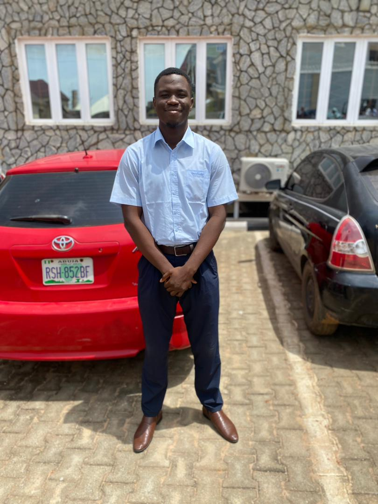

Omoye Micah

Summary
I am a confident, dependable and deidicated person, i excel at prioritizing completing tasks effectively and following through to achieve project goals
Education
- Bachelor of Science, Health Education-University of Benin (2017-2021)
- Senior Secondary school certificate- king of kings academy (2017)
Work Experience
- Physical and Health Education teacher - 2023-2024
- Taught Physical and Health Education in every class at all levels
- in charge of all outdoors and indoors physical activities
Skills
- Project management
- microsoft office suite
- good communication skills
Awards and Certifications
- NYSC certificate
- Health, safety and Environmental (level 1,2,3)
Others
contact
hobbies